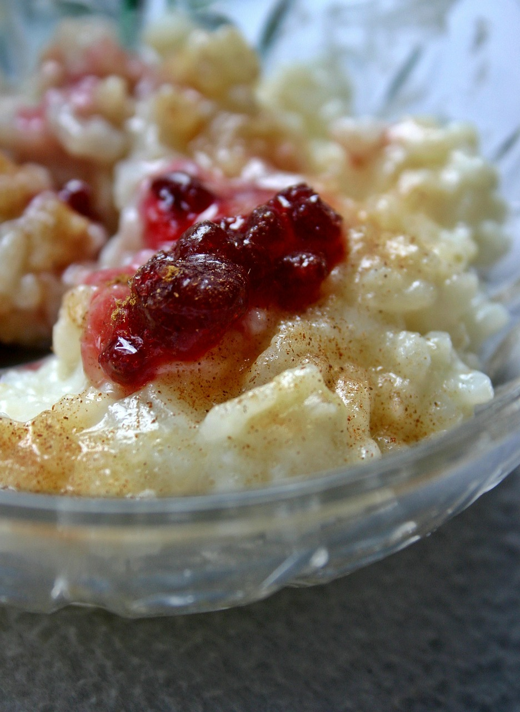

Rice Pudding
- 2 cups of rice, cooked
- 14 oz can of coconut milk
- 3 cups of water
- 1/2 cup of brown sugar
- 1/2 cup of golden raisins
- 1/4 cup coconut flakes
- 4 cloves
- 3 cinnamon sticks
Bring together water, rice, and coconut milk in a saucepan on low heat for 15 minutes.
Stir in the brown sugar. Let sit for 5 minutes.
Mix in golden raisins and coconut flakes.
Let cool completely. Garnish with cinnamon and serve.